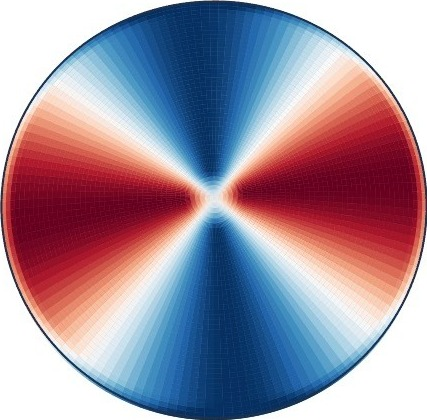

Катаракта 2026 · Москва
2–4 сентября 2026
Современный подход к хирургической коррекции смешанного астигматизма с применением фемтосекундной лентикулярной технологии
Никитина А.Е. · д.м.н. Костенев С.В., к.м.н. Макаров Р.А., Садрутдинов Р.Ш.
ФГБОУ ВО «Российский университет медицины» Минздрава России
ФГАУ «НМИЦ «МНТК «Микрохирургия глаза» им. акад. С.Н. Федорова» Минздрава России